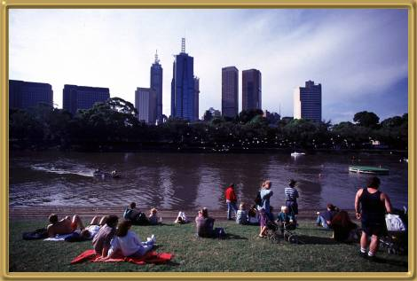

Photograph: courtesy of Art Today
Sydney is Australia's biggest city, in terms of population. It's also the city most international travellers first arrive at. The harbour is beautiful and great for sailing. There is a great deal to see and do in Sydney and a visit to The Rocks is a must!